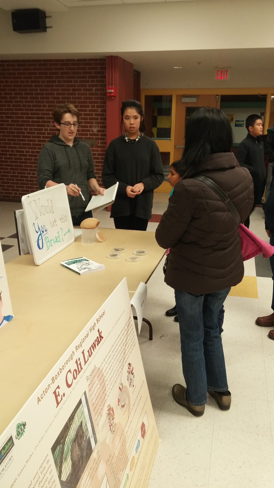
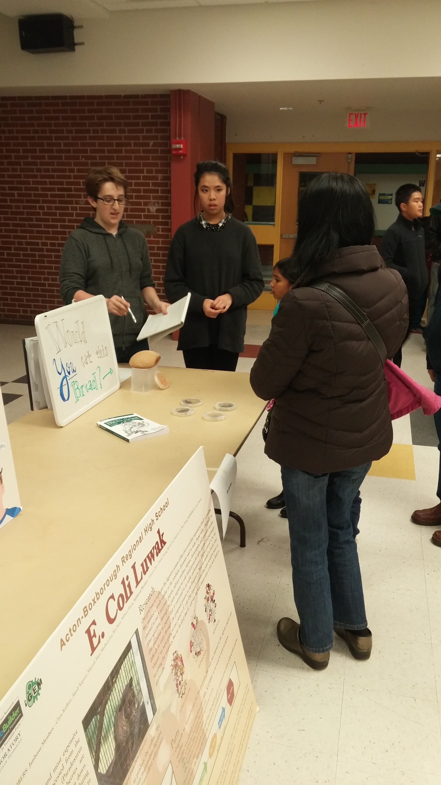

Home
Welcome to the ABRHS 2015-2016 BioBuilder Team.
Abstract
Wood splinters are a common everyday injury; however, as bothersome as it is to get the splinter itself, it can prove even more cumbersome to remove it. Along with the stinging that is normally produced when one attempts to simply pull the wood splinter out, there is always the risk that small fragments of wood may be left behind. With improper removal comes the risk of infection, and if the wood splinter itself is already contaminated with bacteria or fungi, one can fall prey to a more severe illness. Even without contaminated wood, the body responds in a detrimental manner, sparking inflammatory reactions to the oils and resins of the wood. Infection is likely to occur if one removes the wooden splinter improperly, let alone if the wooden splinter is completely ignored (Chan and Salam, 2003). In this case, if the splinter is not treated, an inflammatory reaction is almost inevitable.
The breakdown of cellulose from plant materials poses three major problems: first, we must isolate individual cellulose strains, then cut the long cellulose strands into smaller fragments, and finally cut those fragments down to glucose, which will be metabolized by the E. coli. For the first stage, we will use a ligninase to cut the lignin which holds the cellulose in the crystalline wood structure. This will release single strands of cellulose for attack by our endoglucanase, which will cut the long strands randomly in the middle to produce shorter and shorter strands, whose ends will come under attack by beta-glucosidase, an enzyme that will cut off individual glucose molecules and ultimately fully destroy the glucose polymers, disposing of the cellulose.
Project
Our project this year is to make a biomaterial that can dissolve fragmented material inside human skin, particularily wood splinters. Our E. Coli chassis must be able to dissolve this hard plant material in a reasonable time frame, and must render the splinter removable physically or immunologically.
Plant Material Digestion Part Design
We are going to use three proteins to aid in the breakdown of rough plant material. Our chassis, E. Coli, will be transformed with one plasmid with all our recombinant DNA on it. Along with ampicillin resistance, the pSB1A2 plasmid would consist of three enzymes in series, endoglucanase (BBa_K805011), β-glucosidase (BBa_K118028), and finally a ligninase (BBa_M36188), in that order. Because the endoglucanase part is activated by the presence of cellulose (and even long cellulose strands) and the three enzymes are placed in direct order, cellulose entering our chassis will ultimately cause the expression of all three enzymes. The endoglucanase part is also glucose-repressible, meaning when glucose is present as a monosaccharide in the cytoplasm, all three parts cease to be transcribed. In order to put all three enzymes onto the same plasmid that the endoglucanase is located, we will utilize the built-in restriction enzymes and follow similar laboratory instructions as 3A Assembly. Restriction enzymes that we can use include SpeI, NotI, PstI, all of which act on restriction sites built in our plasmid after the main ORF sequence.
- Plasmid with Endoglucanase: http://beta.labgeni.us/registries/parts_registry/?part=BBa_K805011
- Lone pSB1A2 plasmid: http://parts.igem.org/Part:pSB1A2
- Cel5A, endoglucanase: http://parts.igem.org/Part:BBa_K805011
- Beta-Glucosidase: http://parts.igem.org/Part:BBa_K118028
- Ligninase: http://parts.igem.org/Part:BBa_M36188
Initial Project Ideas
During our brainstorming sessions, our team members would pool together project ideas or even phrases pertaining to various biological phenomena. Next, we narrowed that list down by having members choose and research any ideas from the list we had made. Members researched problems that their concept could solve, previous iGEM and BioBuilder projects, and parts from iGEM's Registry of Standard Biological Parts. After presenting research, we came together and voted on the following finalized project ideas.
- Calcium enriched grain (for those without access to dairy)
- Powering a source of light with urine.
- Water safety in developed countries (BPA, lead, triclosan, artificial sugars, microbeads, etc)
- Detection of mental health biomarkers (cortisol, Iga, etc.)
- Dissolving foreign material (wood splinter, etc.)
Team
Our team consists of students from grades 9-12 of the Acton-Boxborough Regional High School. This has been our synthetic biology club's second year participating in BioBuilder and third year in activity, as we competed in the iGEM competition our first year. Our group is diverse and promotes a wide variety of paradigms in our weekly meetings:

Mayank Mali
The 11th grade website designer.
"I love all things STEM, but working on a genetic engineering project is especially fun. It always helps the learning process to see a newly learned concept turn into an end-product so tangible."
Roy Yoon
The STEM field has always given me something to be interested or amazed by. As I advance in my academic career I am constantly developing new interests, and grasping the world in a different point of view. Through genetic engineering, I am faced with new challenges and problems that further develop the way I think and solve problems.
Caleb Trotz
The Genetic Engineer
"I joined BioBuilder because I've always had a penchant for problem solving and love to build and test novel solutions. The ability to use synthetic biology as a powerful problem solving tool was especially appealing, as I have enjoyed learning about and applying genetic concepts in the past. I also like to explore the design aspect of technology, something which BioBuilder also affords."
Madhuri Jois
The Cool Student
Madhuri Jois, Supreme Dictator, enjoys spending her time reflecting on amazing literature and TV shows. As a senior exposed to horrible SAT vocab lists, she has finally discovered that she is a self-proclaimed misanthrope. She has been in BioBuilder for three years, but joining the BioBuilder Team was merely a way for her to design a super organism that will wipe out the human race, a species that she particularly despises. One rather fascinating aspect of Madhuri is she greatly enjoys eating Dove chocolates and reading the profound statements on the wrappers. Madhuri currently uses the TV show Avatar: the Last Airbender as a reference to appropriate human etiquette. In fear of someday becoming a terrifying crotchety cat lady, she would like to make the distinction that she would prefer a flying bison as a pet. She hopes to go to medical school in her future, which, in this author’s opinion, is to gain a better understanding of the human body in order to properly eviscerate those who annoy her.
Ashna Raiker
The Cool Student
Ever since I saw the club poster for BioBuilder, I knew I wanted to join. Biology as a field is so attractive; as we get to perform many hands-on activities.
Peter Wilson
The Cool Student
Peter joined Biobuilder to learn basic bioengineering techniques in a real-world setting, as opposed to the textbooks. Hopefully, someday, bioengineering might produce a drug (or figure out how to get those microbes in his gut working) in order to cure his food allergies.
Aaron Mathieu
The Cool Teacher
Aaron Mathieu is a biology teacher at Acton-Boxborough Regional High School in Acton Massachusetts, where he has been teaching since 2000. During his 19-year teaching career he has taught biology (including Advanced Placement Biology), bioethics, chemistry, physics, astronomy, physical science, forensics, and environmental science. Mr. Mathieu has been working with the BioBuilder Foundation for 5 years and is a BioBuilder Master Coach.
Outreach
In order to educate our local community about the field of genetic engineering as well as our own personal endeavors, our BioBuilder team hosted an exhibit at Acton-Boxborough's Science Family Night, where families could come and learn about local STEM projects in our community. During the exhibition, we also conducted a survey with our very own vitamin-A enriched genetically modified yeast-bread. We asked participants whether they would be willing to eat a genetically modified food product. Although we conducted this same survey last year at the same event, we found a larger percentage of people willing to eat genetically modified yeast bread in this year's responses.

 

Labs
We conducted many labs, from our own transformation labs to complete our project, or introductory labs to familiarize our members with the tools and methods required for general sythnetic biology knowledge.
What a Colorful World
Our first lab came with the BioBuilder standard kit and was used to introduce our members to the processes and tools of transformation. Four treatments of E. coli would be produced, one with E. Coli strain 4-1 and the pPRL plasmid, strain 4-2 and pRPL plasmid, strain 4-1 and pGRN plasmid, and strain 4-2 and pPRL plasmid. The pPRL, and pGRN sequences produce purple and green pigment respectively.